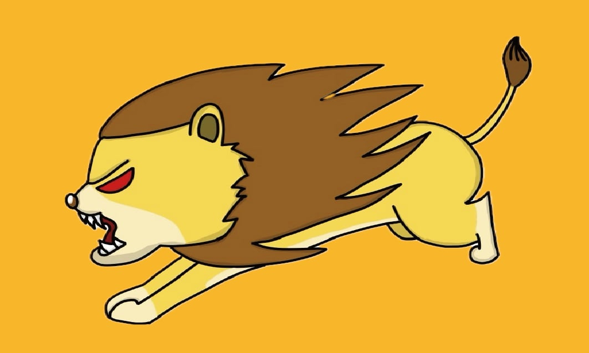

Ray 江明叡
A112070087
籃球愛好者，資傳新生，追求團隊合作與個人成長。
信箱:raychiang0812@email.com
嗨！大家好，我是世新大學資訊傳播學系的大一新生。我對於資訊科技和傳播領域有濃厚的興趣，期待在這個領域中不斷學習和成長。除了學業，我還熱愛打籃球，對於這項運動有著濃厚的熱情和執著。在球場上，我學會了團隊合作、領導能力和不斷進步的精神。我相信這些品質將會幫助我在學術和人生的道路上更上一層樓。期待能夠和大家一起在世新大學度過精彩的時光！
這是一段拿來測試的P我要用CSS讓他更漂亮